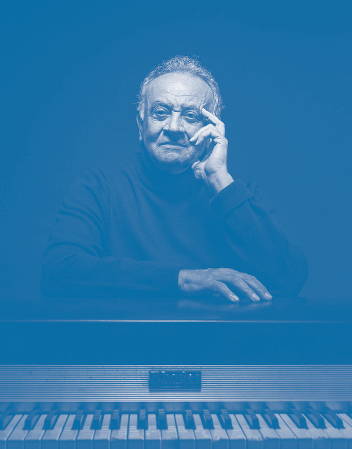
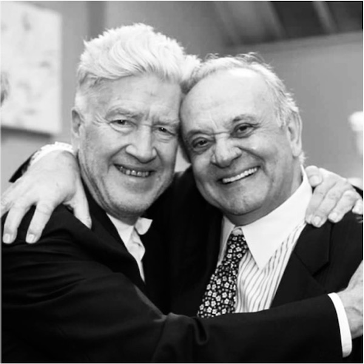

ANGELO BADALAMENTI
Angelo Daniel Badalamenti est un auteur, auteur-compositeur, artiste d’enregistrement, musicien, compositeur de films et chef d’orchestre. Il a travaillé dans le monde de la musique de 1971 jusqu’à sa mort en 2022. Ces œuvres principales en tant que compositeur de musiques de film sont: «Blue Velvet», «Twin Peaks», «Mulholland Drive» et «Une histoire vraie», tous réalisées par David Lynch. Possédant de nombreuses récompenses, Badalamenti est un des artistes phares depuis les années 70. Il est notamment connu pour ses nombreuses collaborations avec David Lynch. Il apparait même dans certains de ces films comme: «Mulholland Drive» et «Blue Velvet». Pour finir, Angelo Badalamenti est un artiste à succès aillant collaboré avec des artistes tels que Michael Jackson, David Bowie, Paul McCartney, etc. Malgré son succès il n’a jamais quitté son lieu d’origine: le New Jersey.
Badalamenti en 2014
DAVID LYNCH & ANGELO BADALAMENTI
Dîner d'ouverture de l'exposition «Unified Field» en septembre 2014 à la «Pennsylvania Academy of the Fine Arts.»
Les deux artistes se sont connus en 1986 lorsque David Lynch cherchait un coach vocal pour Isabella Rossellini dans «Blue Velvet». Angelo ne devant être que ce coach vocal fini par composer toute la bande originale du film. Depuis cela, Lynch et Badalamenti sont devenus l’un des plus célèbres binômes auteur-compositeur.